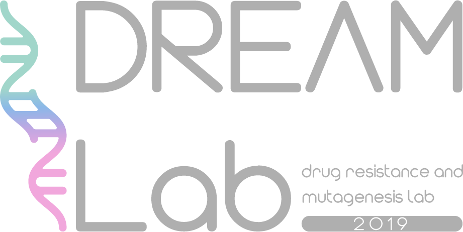

Quimiorresistência
Os mecanismos moleculares e celulares que permitem a células tumorais escapar da quimioterapia, como a temozolomida e a cisplatina.

Unifesp · Escola Paulista de Medicina · desde 2019
Somos o DREAM Lab — |
Investigamos os mecanismos moleculares e celulares que tornam células tumorais resistentes ao tratamento.
O DREAM Lab nasceu em 2019, idealizado pela Profa. Dra. Clarissa Rocha, para entender por que algumas células tumorais sobrevivem à quimioterapia. Hoje fazemos parte do Programa de Pós-Graduação em Medicina (Hematologia e Oncologia), no prédio do Hemocentro do Hospital Universitário da Unifesp.
Áreas de foco diferentes, um objetivo em comum: entender a resistência tumoral para tratar melhor.
role para explorar →
Conheça nossas pesquisadoras. Clique em um card para ler mais.
Queremos um ambiente acolhedor e colaborativo, com rigor científico e uma equipe alegre no cotidiano. Cada pesquisadora tem seu foco, mas a gente se apoia em todas as frentes.
psiu: arrasta os adesivos ✿
Bancada, congressos, cafés e comemorações. Clique numa foto para ampliar.
Vídeo sobre a pesquisa de Clarissa Rocha em gliomas: tumores resistentes à quimioterapia expressavam um gene que influencia os níveis de glutationa, que pode se ligar à temozolomida e impedir que ela chegue ao núcleo da célula tumoral.
assistir no YouTube ↗ 2019Episódio "Herança Genética" (27/10/2019), sobre edição gênica e suas aplicações na medicina.
assistir no YouTube ↗Estuda reparo de DNA e mutagênese em células de mamíferos, incluindo células de pacientes com xeroderma pigmentosum, com foco em tolerância a lesões e apoptose.
saiba mais ↗Grupo da Unifesp liderado por Mariana Lazarini que estuda neoplasias hematológicas em busca de novos alvos para terapia molecular.
@target.research ↗Laboratório da Unifesp que colabora com o DREAM Lab.
@labsima_unifesp ↗Quer fazer parte do nosso grupo? Ficou curiosa(o) sobre nossas pesquisas? Fala com a gente :)
clarissa.rocha@unifesp.brAv. Dr. Diogo de Faria, 824 — 5º andar
Vila Clementino, São Paulo – SP
Tel.: (11) 5539-7289